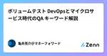
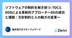
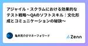
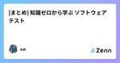
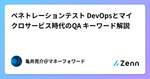
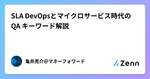
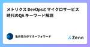
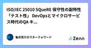

Zennの「QA」のフィード
フィード

モデルトリック LLMにおけるQA LLMにおけるQAで抑えておきたいキーワード
Zennの「QA」のフィード
モデルトリックとは LLM（Large Language Models）における「モデルトリック」は、モデルが意図的にプログラムされた動作や制約を回避したり、予期しない方法で動作することを指します。モデルトリックは、品質保証（QA）およびセキュリティの観点からいくつかのリスクをもたらします。以下に詳しく説明します。 QA（品質保証）の観点からのモデルトリック 不安定な出力 モデルトリックによって、モデルは不安定な出力を生成する可能性があります。これは、一貫性のある品質の維持が困難になるため、ユーザー体験に悪影響を与える可能性があります。 テストカバレッジの欠如 モデ...
18時間前

QAのリレー記事をZennでやるぞ〜！
Zennの「QA」のフィード
はじめに みなさん、お初にお目にかかります。 株式会社ビットキーでQAをしているやきょ(@yakyo_824)と申します。 今回はじめてZennで記事を投稿するにあたり、ちょっとした企画をしました。 その名もBitkey Software QA Advent Calendar 2024 Summer！ ......長い。長いがゆえに記事タイトルではリレー記事と簡略化しました。 本記事はその集大成となるようにデザインしながらその説明を行いたいと思います。 また本企画の初回記事となるため、ビットキーとそのSoftware QAチームについて軽く説明します。 もしご興味を持った方がいればぜ...
1日前

ソフトウェアの制約を解き放つ: TOCとDDDによる革新的アプローチ〜アジャイル・スクラム・DevOpsとDDD・TOCの統合〜
Zennの「QA」のフィード
Podcast https://podcasters.spotify.com/pod/show/-qa-in-devops/episodes/TOCDDDDevOpsDDDTOC-e2klfm9 YouTube 概要 このエピソードでは、アジャイル、スクラム、DevOpsの概念とそれらがドメイン駆動設計（DDD）および制約理論（TOC）とどのように結びつくかを探ります。無駄をなくし、効率化を図るためには、QAやエンジニアがTOCやDDDを学ぶことが有益である理由を解説します。アジャイル環境においては、スプリントごとにルールが変わることがあり、変化に強いアプローチが求められます...
2日前

アジャイル・スクラムにおける効果的なテスト戦略〜非言語コミュニケーションの力：Slackスタンプと自己開示の重要性〜
Zennの「QA」のフィード
Podcast YouTube https://youtu.be/9dH4fIp5RHk
3日前

カオスエンジニアリング DevOpsとマイクロサービス時代のQA キーワード解説
Zennの「QA」のフィード
カオスエンジニアリング カオスエンジニアリング（Chaos Engineering）は、システムの堅牢性と回復力を向上させるために、意図的に障害や異常を発生させ、そのシステムの挙動を観察・評価する手法です。この手法は、Netflixが開発した「Chaos Monkey」というツールに由来しており、実際の運用環境でランダムな障害を発生させることで、システムの弱点を発見し、改善するために使用されます。以下では、カオスエンジニアリングがQA、DevOps、およびマイクロサービスの文脈でどのように重要であるかを説明します。 https://youtube.com/shorts/UsjDpG4...
4日前

WACATE2024 夏に参加しました！
Zennの「QA」のフィード
WACATE2024 夏に参加しました！ WACATE2024 夏 〜テストケースには、必ず作った人の意図が存在する〜に参加しました。 今回、初めて合宿型のエンジニアイベントに参加し、非常に実りのある体験をさせていただきました。 自分が何を考えて何を感じたのか整理するとともに、どなたかの目に触れて少しでもWACATEの認知度が高まればいいなあと思いこちらの記事を書きました。 自分がこのイベントで感じた楽しさが伝わるよう、ゆるめに書きます。 自己紹介 2024年で社会人6年目になります。今年4月にSIerの開発エンジニアから品質コンサルティングサービスのQAエンジニアに転職しました...
4日前

心理的安全性 DevOpsとマイクロサービス時代のQA キーワード解説
Zennの「QA」のフィード
心理的安全性とは 心理的安全性（Psychological Safety）は、チームメンバーが自分の意見やアイデア、懸念を自由に表現できる環境のことを指します。この概念は、エイミー・エドモンドソン（Amy Edmondson）によって提唱され、Googleの「Aristotleプロジェクト」によって広く知られるようになりました。心理的安全性が高いチームでは、メンバーがミスを恐れずに発言できるため、創造性や問題解決能力が向上し、全体的なパフォーマンスが改善されます。以下では、心理的安全性がQA、DevOps、およびマイクロサービスの文脈においてどのように重要であるかを説明します。 ht...
5日前

WACATE2024夏に参加しました
Zennの「QA」のフィード
はじめに みなさんこんにちは！ 夏ですね〜！暑いですね〜！ 今回、6/22・23の2日間に渡って行われた WACATEという勉強会に参加したので、レポートを書こうと思います。 ゆるゆると書いていくので、ぜひ通勤時間の暇つぶしにでもお読み頂けると嬉しいです。 https://wacate.jp/ WACATEってなに？ WACATEとは、若手テストエンジニア向けのワークショップです！ Workshop for Accelerating CApable Testing Engineers：内に秘めた可能性を持つテストエンジニアたちを加速させるためのワークショップ 自分は最近知りま...
5日前

Four Keys DevOpsとマイクロサービス時代のQA キーワード解説
Zennの「QA」のフィード
Four Keys "Four Keys"は、GoogleのDevOps Research and Assessment (DORA) チームが特定した、ソフトウェアデリバリとパフォーマンスの成功を示す4つの重要なメトリクスのことを指します。これらのメトリクスは、ソフトウェア開発およびデプロイメントのパフォーマンスを評価し、改善するための基準として広く使用されています。以下では、Four Keysの各メトリクスについて説明し、それらがQA、DevOps、およびマイクロサービスにおいてどのように活用されるかを詳述します。 https://youtube.com/shorts/z6HHN...
6日前

APIdogを利用して、QAエンジニアによるAPIテストを実施してみる
Zennの「QA」のフィード
はじめに これまで、CUIベースやPostmanを利用したAPIテストを実施してきましたが、これまで結合テスト期間中に一人で実施することが多かったので、特にテストツールには拘りはありませんでした。 今回は複数人のチームでテストを実施すること、API実装と並行してAPIテストを実施するアジャイル開発を行うため、チームでテスト環境を共有できるツールが必要になりました。実験的なプロセスでもあったため、4人までならFree利用(かつクレジットカード登録不要)ができるAPIDogを利用することになりました。 APIDogとは APIDogは、API開発とテストを効率化するためのAPI開発プ...
6日前

ビッグバンリリース DevOpsとマイクロサービス時代のQA キーワード解説
Zennの「QA」のフィード
ビックバンリリースとは ビッグバンリリースは、新しいシステムや大規模なアップデートを一度にリリースする手法ですが、その性質上、リスクが高いとされています。以下では、ビッグバンリリースのリスク、リスクを軽減するための対策、およびQA、DevOps、マイクロサービスの文脈での具体的な取り組みについて説明します。 https://youtube.com/shorts/yKvuHdmKmrY ビッグバンリリースのリスク システム全体の不安定化：一度に大量の変更を加えるため、予期しないバグや互換性の問題が発生しやすく、システム全体が不安定になる可能性があります。 リリース失敗の影響：...
7日前

ボリュームテスト DevOpsとマイクロサービス時代のQA キーワード解説
Zennの「QA」のフィード
ボリュームテストとは ボリュームテスト（Volume Testing）は、大量のデータを扱う状況においてシステムがどのように動作するかを評価するテスト手法です。これにより、データ量の増加がシステムの性能に与える影響を確認し、パフォーマンスやリソース利用の効率性を評価します。以下の観点から、ボリュームテストについて具体的に説明します。 https://youtube.com/shorts/dapkPYl2gA0 QAの観点 1. データ量増加時のシステム挙動の評価 ボリュームテストを実施することで、大量のデータを処理する際のシステムの挙動を評価します。これにより、システムがデータ...
8日前
WACATE24夏に参加しました
Zennの「QA」のフィード
こんにちはHR-techブロダクトでQAエンジニアを担当しているますやまゆうきです。 詳細は後述しますが、WACATEネームはまっす〜です。 ソフトウェアテストの合宿形式のワークショップ「WACATE」に初参加しましたので、詳細についてブログで書かせていただこうと思います。 対象読者 WACATEに興味はあるけど参加したことがない方 WACATE参加経験者 未来の自分(次回参加時の事前準備短縮用) イベントの詳細 WACATEとは Workshop for Accelerating CApable Testing Engineers：内に秘めた可能性を持つテストエンジニ...
8日前

ソフトウェアの制約を解き放つ: TOCとDDDによる革新的アプローチ〜DXの成功と課題：方針制約と人の動きの変革〜
Zennの「QA」のフィード
Podcast https://podcasters.spotify.com/pod/show/-qa-in-devops/episodes/TOCDDDTOCDDD-e2klfiu YouTube 概要 このエピソードでは、品質保証（QA）とコアドメインの関連性について詳しく解説します。コアドメインでない部分のシステム化が無駄である理由や、ルールを可視化する重要性を探ります。コアドメインが増えると品質が低下し、技術的負債が貯まり、顧客価値を提供できなくなる現象を説明します。削ることで品質を向上させるアプローチや、ルールの負債解消が顧客価値に繋がる方法を議論します。また、エリ...
9日前

アジャイル・スクラムにおける効果的なテスト戦略〜QAのソフトスキル：文化形成とコミュニケーションの秘訣〜
Zennの「QA」のフィード
Podcast Youtube https://youtu.be/GI3gXYq1_8A
10日前

[まとめ] 知識ゼロから学ぶ ソフトウェアテスト 1
1
Zennの「QA」のフィード
ソフトウェアテストの基本ーホワイトボックステスト ホワイトボックステスト プログラムの論理構造が正しいかを解析するテスト 論理構造の正しさのみをテストする＝ソフトウェアの仕様がまちがっていることから起こるバグは発見できない 制御パステスト法 プログラムがどのような振る舞いをして、どのように制御され実行されていくかをテストする。 カバレッジ率（coverage rate） カバレッジテスト ステートメント（命令文）カバレッジ コードの中の命令文を少なくとも1回は実行 ブランチカバレッジ 分岐コードに対してそれぞれの判定条件が TRUE、FALSE の結果を少なく...
10日前

ペネトレーションテスト DevOpsとマイクロサービス時代のQA キーワード解説
Zennの「QA」のフィード
ペネトレーションテストとは ペネトレーションテスト（Penetration Testing、ペンテスト）は、システムやネットワーク、アプリケーションのセキュリティ脆弱性を発見し、攻撃者が悪用する可能性のあるセキュリティホールを特定するための一連のテストです。ペネトレーションテストは、セキュリティ専門家（ペネトレーションテスター）が、実際の攻撃者の視点からシステムに対して攻撃を試みることで行われます。以下では、QA、DevOps、およびマイクロサービスの文脈におけるペネトレーションテストの役割と重要性について説明します。 https://youtube.com/shorts/TLp6x...
11日前

SLA DevOpsとマイクロサービス時代のQA キーワード解説
Zennの「QA」のフィード
SLAとは SLA（Service Level Agreement、サービスレベルアグリーメント）は、サービス提供者と顧客の間で合意されたサービスの品質やパフォーマンスに関する取り決めを明文化した契約です。SLAは、特定のサービスがどのように提供されるべきか、またそのサービスが期待されるパフォーマンス基準を満たさなかった場合に取られるべき対策を明確に定義します。以下では、QA、DevOps、およびマイクロサービスのコンテキストにおけるSLAの役割と重要性について説明します。 https://youtube.com/shorts/an0q6gw-BMw QAにおけるSLA QAの観...
12日前

メトリクス DevOpsとマイクロサービス時代のQA キーワード解説
Zennの「QA」のフィード
メトリクスとは メトリクスは、ソフトウェア開発と運用におけるプロセスの効果や品質を定量的に評価するための重要な指標です。これらのメトリクスは、特に品質保証（QA）、DevOps、およびマイクロサービスのコンテキストで重要な役割を果たします。以下では、各領域における主要なメトリクスとその活用方法について詳しく説明します。 https://youtube.com/shorts/Z1UJozecJf4 メトリクスの基本的な説明 メトリクスは、特定の目標に対する進捗や達成度を測定するための数値的な指標です。これらの指標を用いることで、プロジェクトの健康状態を評価し、必要な改善策を講じるこ...
13日前

ISO/IEC 25010 SQueRE 保守性の副特性「テスト性」 DevOpsとマイクロサービス時代のQA キーワード解説
Zennの「QA」のフィード
テスト性とは SQuaRE（Software Product Quality Requirements and Evaluation、ISO/IEC 25010）における保守性の副特性としての「テスト性（Testability）」は、ソフトウェアがどれだけ効率的にテストされるかを示す品質特性です。テスト性は、ソフトウェアのテスト計画の作成、テストケースの実行、およびテスト結果の評価が容易である程度を指します。 https://youtube.com/shorts/v1LsCxn9bLw テスト性が高いソフトウェアの特徴・利点 観察可能性: ソフトウェアの動作が外部から観察しや...
14日前